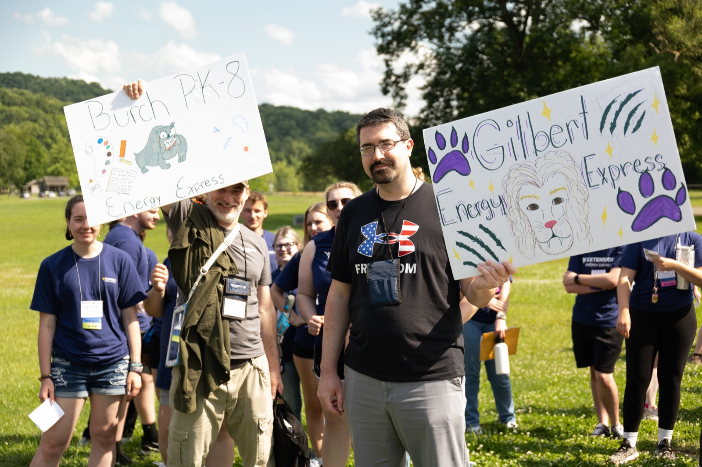
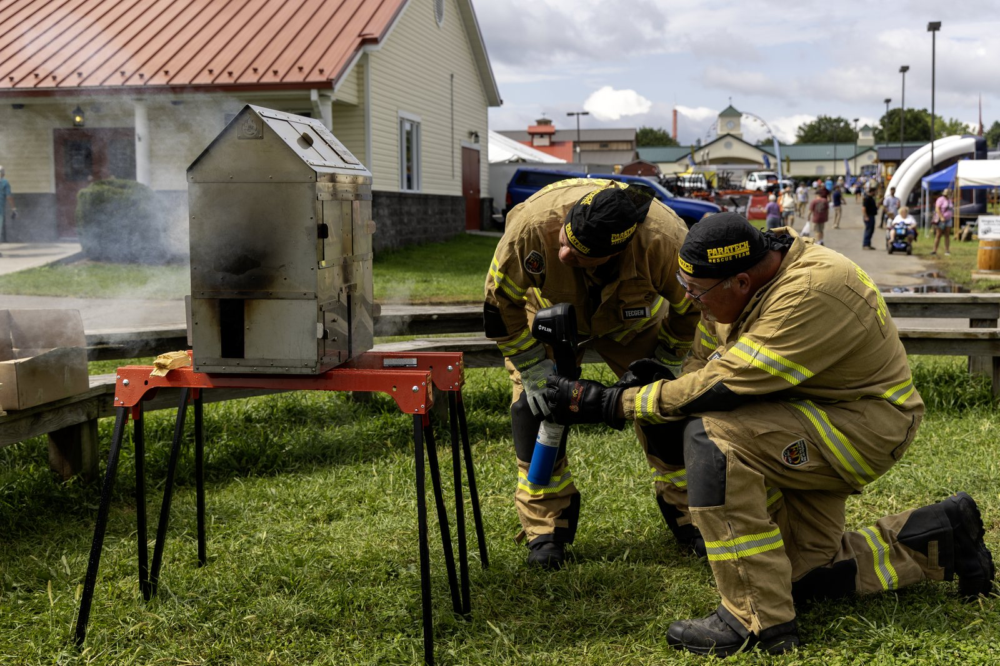
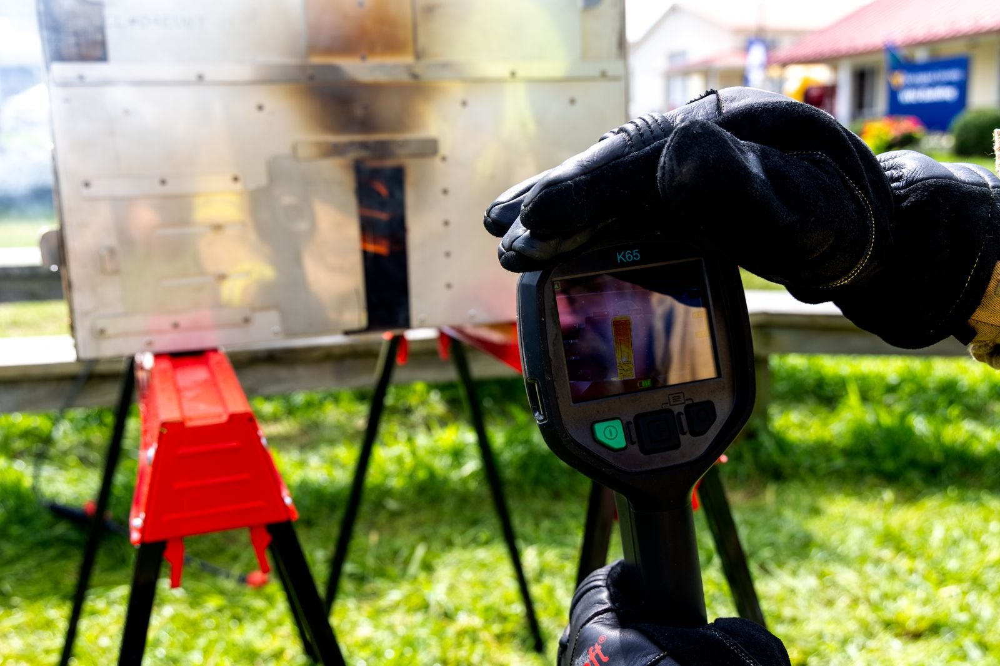
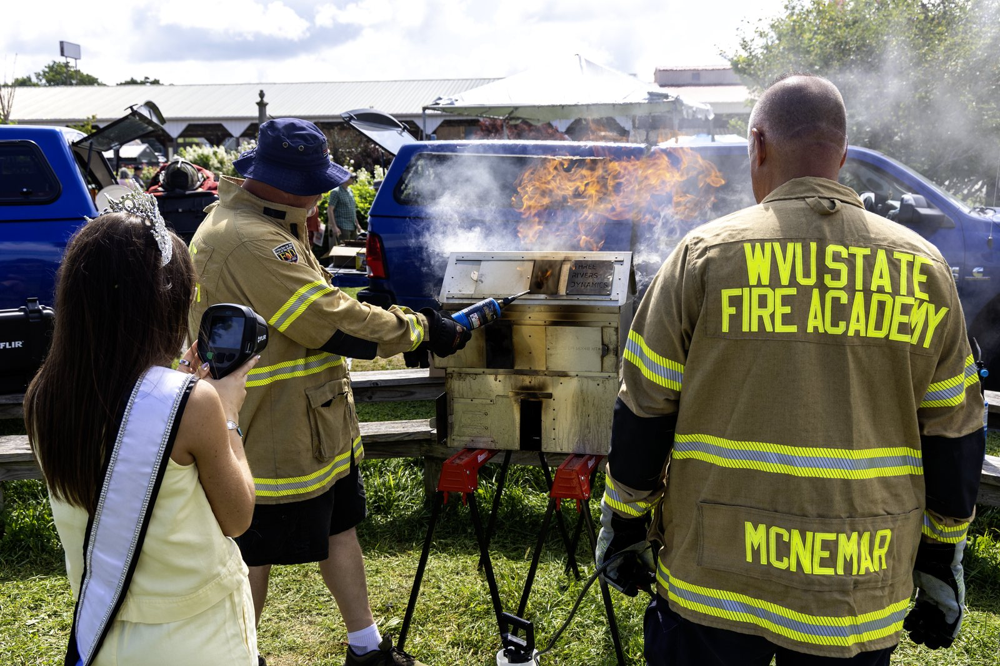
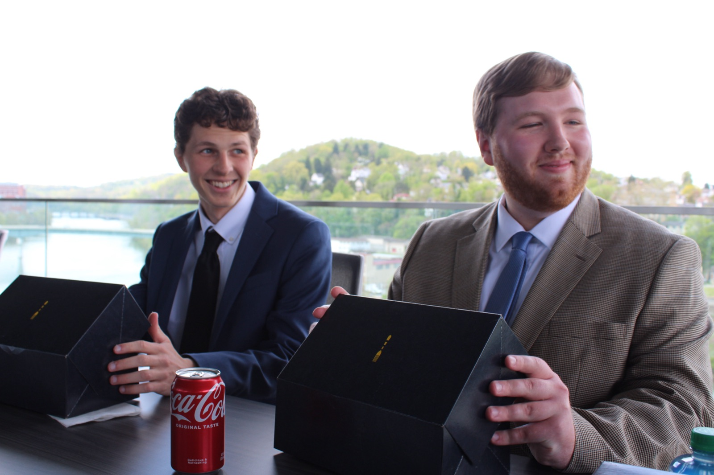
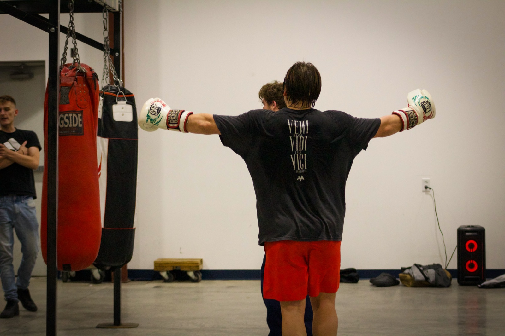
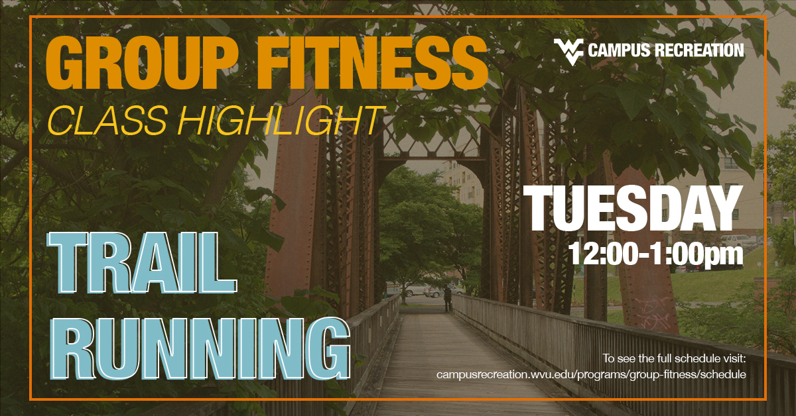
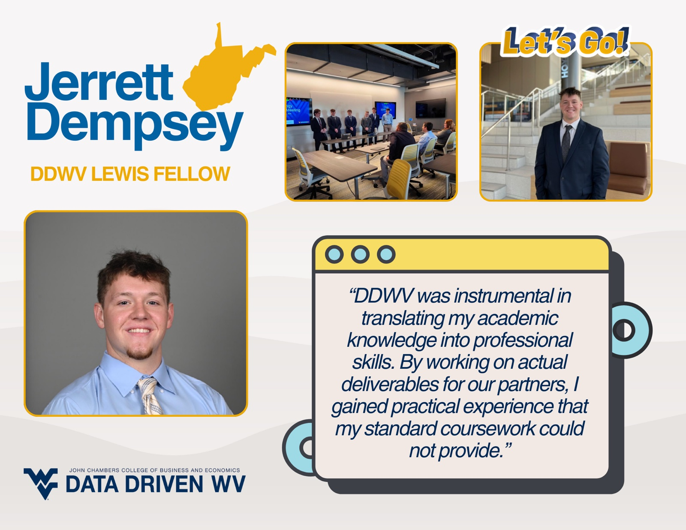
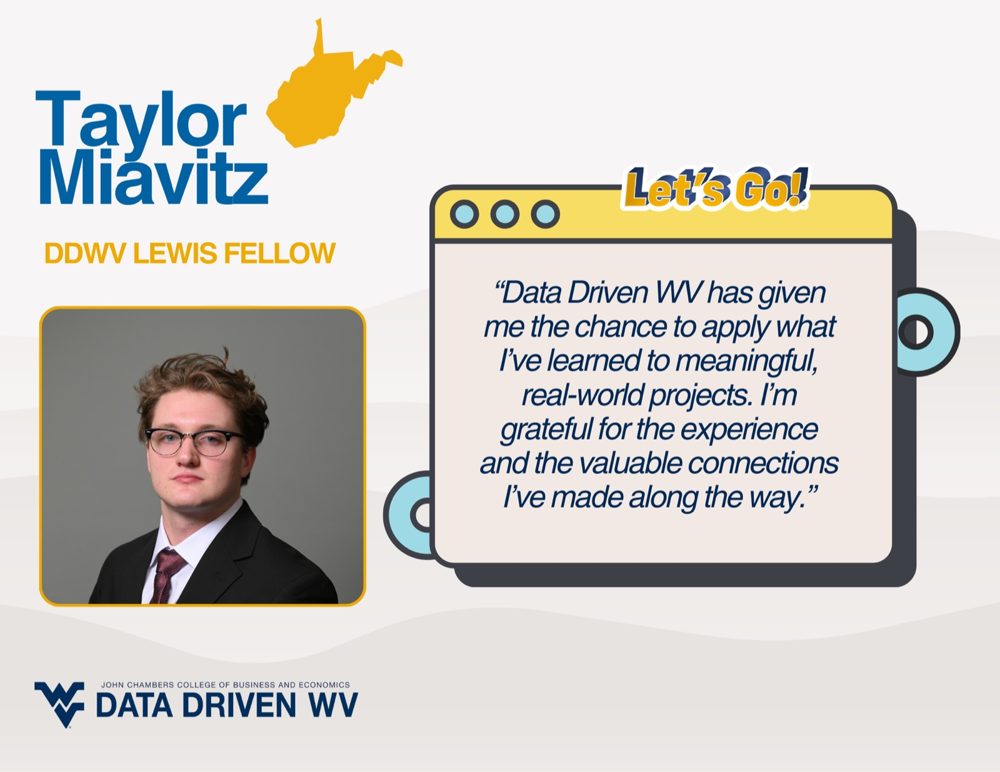

Portfolio
Selected work
Photography and graphic design, organized by collection. Select any image to view it larger.
Photography
Events 4 photos
-

Energy Express -

Thermal Imaging Demo -

Through the Thermal Camera -

Live Burn Demonstration
Portraits 2 photos
-

Group Portrait -

Rooftop Lunch
Sports 2 photos
-

Sparring -

Veni, Vidi, Vici
Automotive 2 photos
-

Orange Supercar -

Silver Convertible
Graphics
-

Day of Giving -

Building an Automated Form with Qualtrics -

Group Fitness: Trail Running -
Experiential Learners -

Lewis Fellow Spotlight: Jerrett Dempsey -

Lewis Fellow Spotlight: Taylor Miavitz